Selected work
A run of smaller problems
Shorter pieces of work — mostly fixing things that were quietly broken. A validation error nobody could read. Benchmark data locked behind a file upload. A review screen people dreaded. Skim the cards; each one is a problem, a fix, and what the business got.
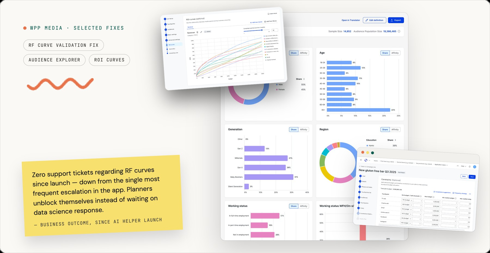
Jump to
01 · Touchpoints · AI
AI reads the rejection
I added an AI explainer to a data upload that used to fail with one cryptic line. It names the exact cells and says, in plain words, what to fix.
Worked with: Backend · Data Science
The problem
RF-curve files were rejected with one red sentence and no pointer to which of dozens of cells was wrong. Planners fixed blind, re-uploaded, failed again — the module's most common support ticket.
What I did
With backend, defined the AI's reply: what's wrong, why, the exact cells, a correct example — one error type at a time, capped at 15 cells so it never becomes a wall of red. Tuned it on real rejected files pulled from the database.
Why it works
An opaque rejection turns into a short, ordered fix list — written for a planner, not a validator.
Zero RF-curve support tickets since launch (March 2026) — down from the single most frequent escalation in the module. Planners unblock themselves instead of waiting on data science.
How to structure an AI's answers — the fixed response template, token and model limits, and a real feel for where an LLM's limits sit.
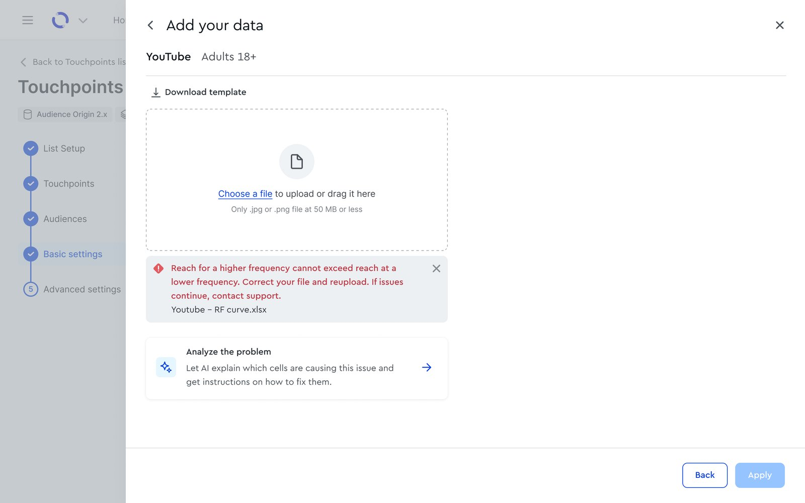
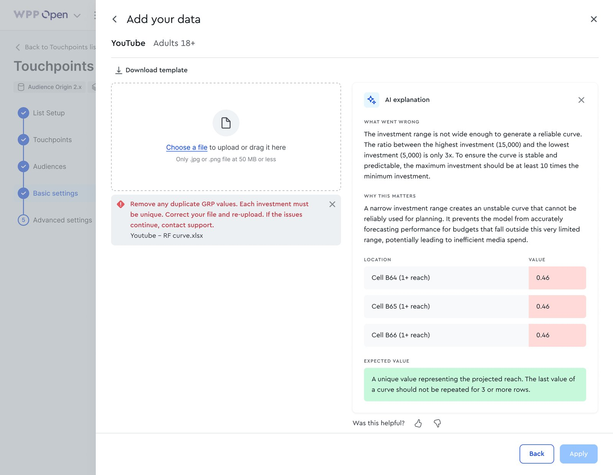
02 · Touchpoints · Data Science
A benchmark ROI library
I turned a rarely-usable feature into a self-serve library. Planners pick a few familiar attributes and get benchmark ROI curves, auto-matched to their channels — no data science request, no file.
Worked with: Data Science · Backend · a co-researcher
The problem
To see ROI curves you had to upload your own econometric model — which almost no team has. Data Science had circled a benchmark version for a long time without it landing.
What I did
Ran the discovery that unblocked it — ~10 interviews with ROI planners across five regions — then shaped the flow: pick category, brand size and online-sales share; curves auto-match to your touchpoints, editable per row.
Why it works
ROI-based planning becomes a starting point, not a locked door — and sensitive client data is never shared one-to-one.
In production with one of the firm's largest clients, whose planners now add library curves to live plans. Cleared econometrician sign-off after nine months of cross-market modelling.
A seat in the senior, business-side roadmap discussions a PO usually owns — and a closer working partnership with Data Science.
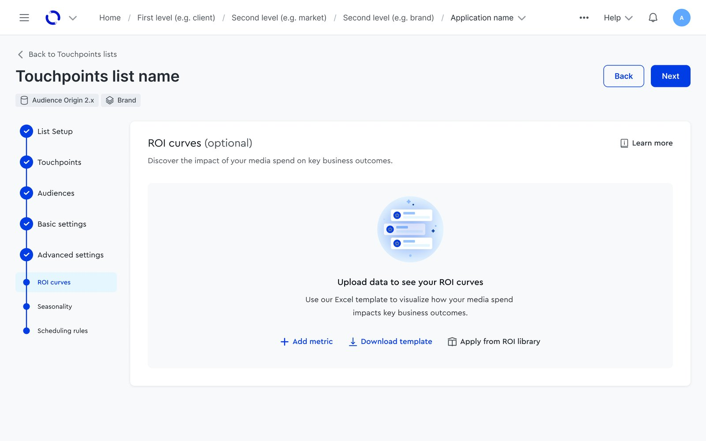
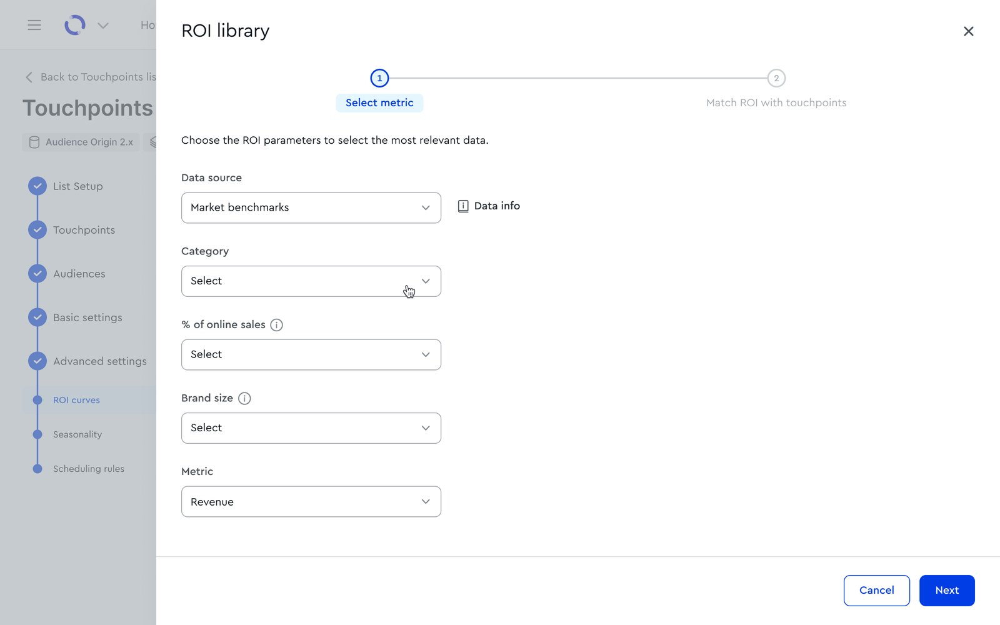
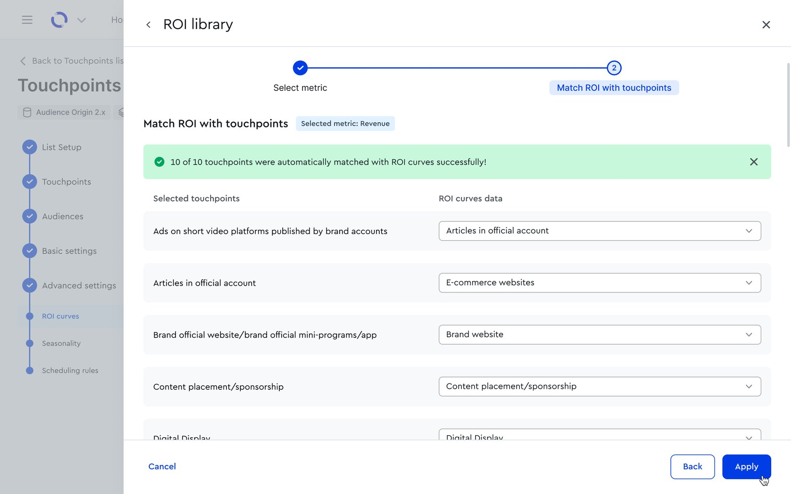
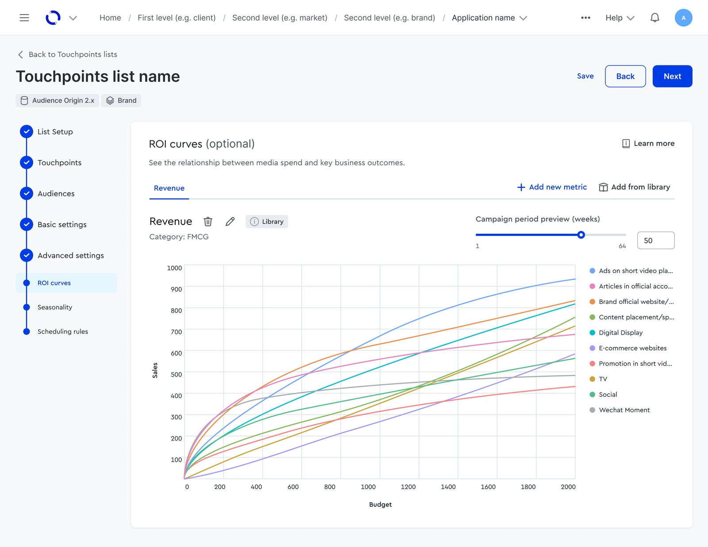
03 · Campaigns · Budget optimisation
Budget limits, backed by history
I gave planners a way to pull budget constraints in instead of typing them — their team's own limits, or benchmarks Data Science built from thousands of past campaigns.
Worked with: Data Science · Product Owner
The problem
Constraints were manual entry, one row per channel — from a client, an investment team, or a hunch.
What I did
Added constraint entry where standing limits belong, and argued the benchmark model out of the module where it couldn't work — pivoting it into the Campaigns step that knows campaign duration. PO and the Data Science director signed off. The result: a two-tab panel — your team's limits / smart benchmarks — each shown only when data exists.
Why it works
The numbers sit where the context is, and a gut call can be checked against real history.
Shipped on direct demand from a top client and several teams — standing constraints set once, not re-keyed from a spreadsheet into every campaign.
Coordinating one feature across several teams building in parallel — running the shared refinements, keeping every squad clear on the next implementation steps.
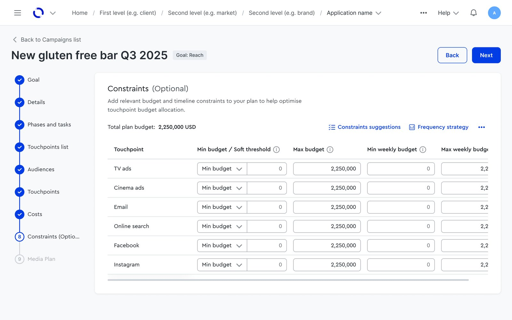
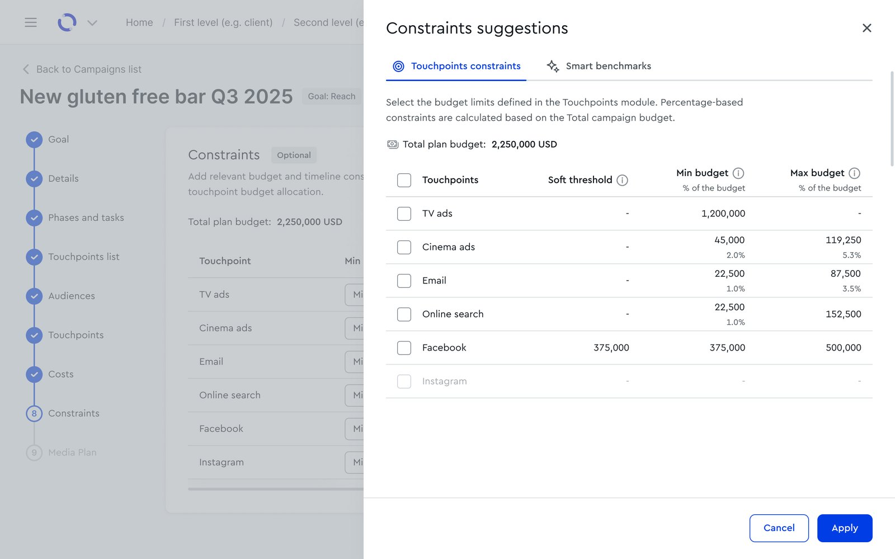
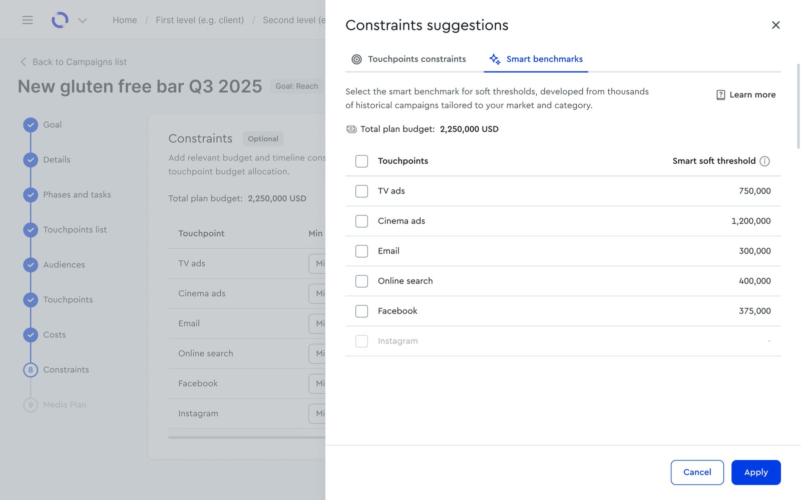
04 · Touchpoints · Data governance
Reviewing a data update
I redesigned how planners apply market-admin data updates — from scattered icons and a blind "apply all" to one panel that shows exactly what changes.
Worked with: Frontend · Data Science
The problem
Update icons littered the list; "apply all" had no preview, so you accepted blind. Details hid in a cramped, scrolling popover. Engineering had flagged the code as unmaintainable.
What I did
One banner, no per-row icons. "Review data & update" opens a single panel showing every change current vs. incoming, with a plain-language warning on risky ones ("this removes the RF curves on this audience"). Take everything, or pick parameter by parameter.
Why it works
You see exactly what's about to change — and what it costs — before it changes.
A clean model engineering could rebuild on — shipped in about a month, early 2026, replacing a flow the team couldn't safely maintain and users didn't trust.
Working close to backend — mapping, with engineering, how data actually moves through our applications.
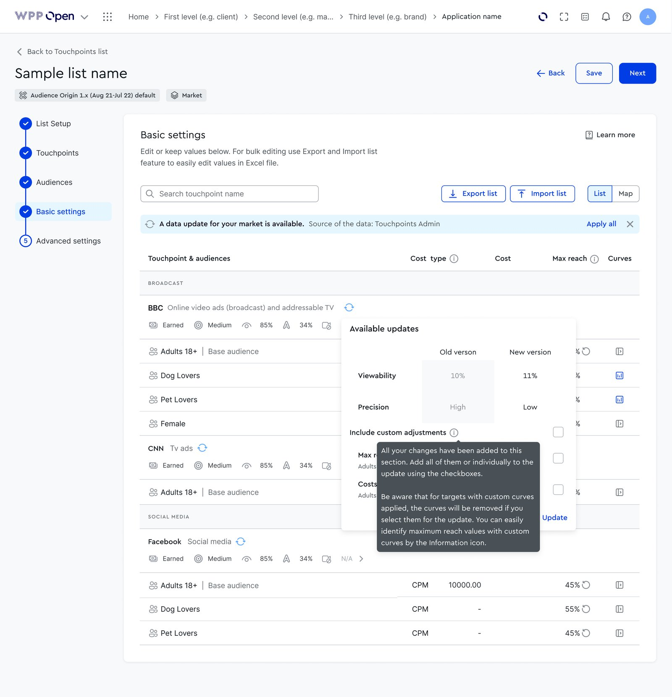
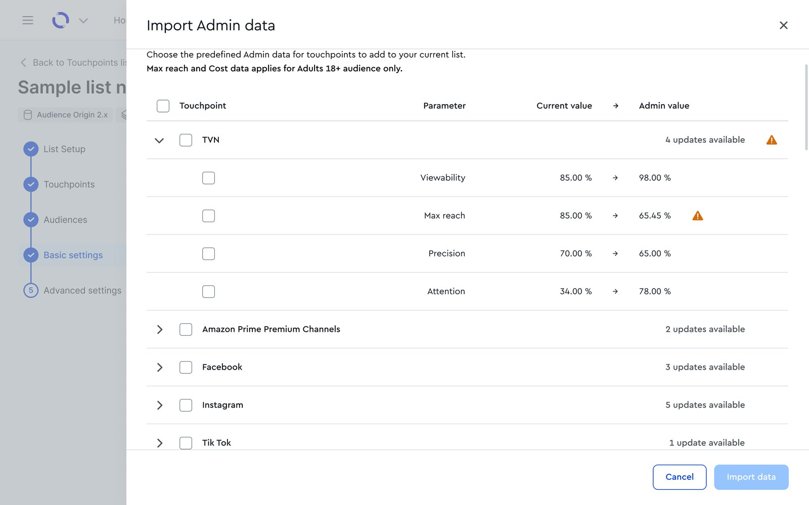
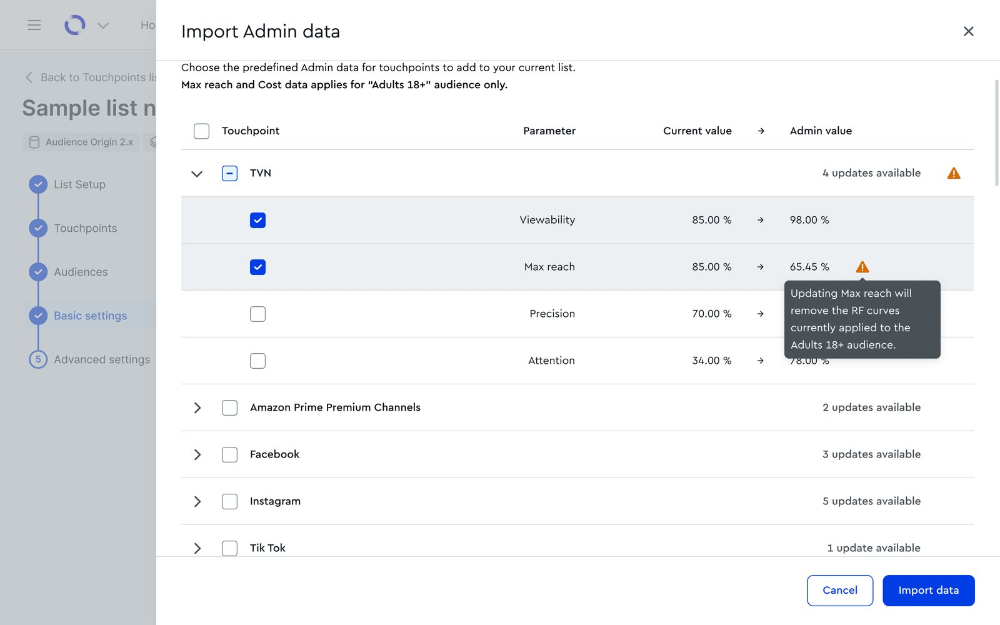
05 · Audience Origin · Rebuild
Rebuilding the audience builder
I rebuilt one of the platform's most-used tools on shared components — and fixed the navigation while it was open.
Role: Lead designer · with the design-system team
The problem
The builder still ran on an old design system, adrift from everything around it, and its navigation was hard to follow.
What I did
Rebuilt it on shared components and reworked the flow — a data-source tree, a canvas where AND/OR logic stays visible as you build, a live audience size. Creating an audience is now a short side panel.
Why it works
It looks like the rest of the platform, and the path from attributes to a saved audience got shorter.
Shipped early 2025 to the platform's largest user base — the most-used module of the set (exact figures confidential).
Data visualisation in depth — many chart types, and how each should behave when the layout flexes.
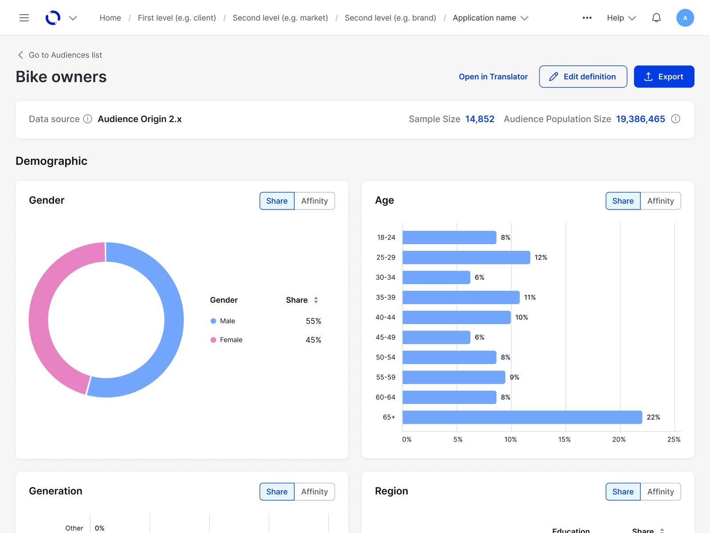
How I work
The longer research stories live on the How I work page — including a set of interviews that reframed a "frequency capping" feature request before any design started, and changed which of two technical directions the team built.